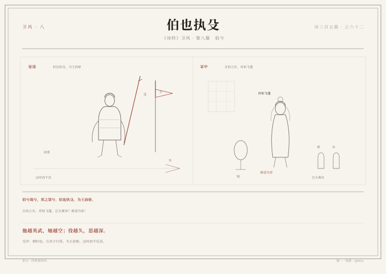
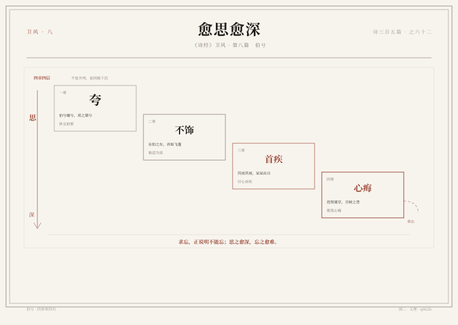

第六十二篇 伯兮
卫风 · 之八 SJ062
朗读 · 普通话
依经文原文朗读，章次不读出；配古琴底乐，不改速、不加拖腔。全库同一音色（豆包 TTS），非播音员录制。
一 解题
诗三判：
- 谁在说：一个妇人，称她的丈夫为「伯」。伯从王东征，久役不归；她在家里，从夸夫、不饰、盼归，一直盼到头痛、心病。
- 说什么事：先说伯的武美，再说自伯东去后自己不事容饰；再说盼归而不得，宁愿头痛；最后说想找忘忧草，却终于不肯忘。四章一层深一层，收在「心痗」。
- 为何编在此：卫风第八。前《河广》写「义不可往」，此篇写「期而不至」；一个被礼制截断，一个被征役拖长。卫风从「义」转到「役」，从一个人的不能往，写到一家人的等不回。
《毛序》：「《伯兮》，刺时也。言君子行役，为王前驱，过时而不反焉。卫宣公之时，蔡人、卫人、陈人从王伐郑。伯也为王前驱久，故家人思之。」
朱子《诗集传》：首章「赋也」，二章「赋也」，三章「比也」，四章「赋也」。释「伯」为「妇人其夫之字」，「桀」为「才过人」，「殳」为「长丈二而无刃」；释「谖草」为「合欢，食之令人忘忧者」，「背」为「北堂」，「痗」为「病」。三章说：「冀其将雨而杲然日出，以比望其君子之归而不归也。」四章说：「言焉得忘忧之草，树之北堂，以忘吾忧乎？然终不忍忘也。」
本库的看法：《伯兮》是一首「等不到归期」的诗。
它从「邦之桀」写起，把丈夫写得越高，后面的「首如飞蓬」就越低；从「甘心首疾」写到「使我心痗」，把「想他」写成了病。末章最狠：她想找忘忧草，想忘了，却终于不肯忘。思之愈深，忘之愈难。
先辨三物：伯，是妇人所称夫之字，不是排行老大，也不是「伯父」；桀，是英桀、才过人，不是夏桀，也不是桀骜；殳，是长丈二而无刃的兵杖，不是普通木棍。
二 经文
第一章
伯兮朅兮，邦之桀兮。伯也执殳，为王前驱。
第二章
自伯之东，首如飞蓬。岂无膏沐？谁适为容！
第三章
其雨其雨，杲杲出日。愿言思伯，甘心首疾。
第四章
焉得谖草？言树之背。愿言思伯，使我心痗。
分章：四章，章四句。
三 韵读
| 一 |
朅、桀；殳、驱 |
薛；虞 |
| 二 |
东、蓬；容 |
东；钟 |
| 三 |
日、疾 |
质 |
| 四 |
背、痗 |
队 |
一章两韵，两句一换：「朅、桀」入薛，「殳、驱」入虞；二章「东、蓬」入东，「容」入钟，东钟通押；三章「日、疾」入质；四章「背、痗」入队。全诗六组韵脚，四章层层换韵，越换越短，越换越沉。
四 字义与名物
字义
- 伯——妇人所称夫之字。郑笺「伯，君子字也」；朱子「伯，妇人其夫之字也」。毛传另有「伯，州伯也」一读，谓州里之长；本库从郑、朱，读为夫之字。
- 朅（qiè）——武貌；勇武的样子。
- 桀——英桀、才过人；毛传「特立也」，郑笺「英桀，言贤也」，朱子「才过人也」。不是夏桀，也不是「桀骜」。
- 殳（shū）——长丈二而无刃的兵杖；兵车上的长兵之一。
- 前驱——在前开路、做先锋；「为王前驱」是为周王前导。
- 东——往东；指从王东征伐郑。孔疏辨：郑在卫之西南，而言「东」者，是兵至京师乃东行伐郑，不是郑在卫东。
- 飞蓬——蓬草；蓬草飞散，喻头发乱。
- 膏沐——膏，泽发之油；沐，洗头去垢。不是「膏药」。
- 适——主；「谁适为容」即「为谁主容」、为谁修饰容颜。不是「适合」。
- 其雨——盼着下雨；「其」是冀其将然之辞。
- 杲杲（gǎo）——明亮的样子；太阳明晃晃地出来。
- 愿——念；郑笺「愿，念也」。毛传「愿，每也」，谓每有所言即思伯。
- 言——语助词，无实义。
- 甘心——甘愿承受；「甘心首疾」是宁愿为这思念头痛。毛传「甘，厌也」另是一读，见存疑。
- 首疾——头痛。
- 谖草——忘忧之草；「谖，忘也」。旧注或以为即萱草、合欢，未必可坐实为一种植物。
- 树——种植。
- 背——北堂；不是脊背。朱子「背，北堂也」。
- 痗（mèi）——忧思成病；毛传「痗，病也」。
- 过时——超过服役期限；孔疏「过时者，谓三月一时」；古者师出不逾时。
- 反——返；「不反」是不回来。
名物
- 殳——长丈二而无刃；不是刀，不是矛，是兵车上的长兵。
- 兵车——伯为前驱所乘；殳是车兵之器。
- 飞蓬——蓬草；喻发乱，不是真的把蓬草插在头上。
- 膏沐——发油与洗沐之具；妇人日常容饰之物。
- 谖草——忘忧之草；后世以萱草当之，旧注只说是「令人忘忧」的草。
- 北堂——妇人所常处之堂；「树之背」是把草种在北堂之上。
五 今译
第一章
我的伯啊，真勇武，是邦国里的英才。伯手执长殳，为王前驱。
第二章
自从伯往东出征，我的头发乱得像飞蓬。难道没有发油和洗沐？可我为谁去修饰容颜！
第三章
盼着下雨，盼着下雨，太阳却明晃晃地出来了。我思念伯，甘愿为这思念头痛。
第四章
到哪里找忘忧草？把它种在北堂。我思念伯，忧思成病。
说明：「伯」今译作「我的伯」，保留称呼；「桀」今译作「英才」；「殳」今译作「长殳」；「甘心」今译作「甘愿」；「痗」今译作「忧思成病」。
六 章旨
一章：先夸夫。
「伯兮朅兮，邦之桀兮」两个感叹句，把伯写得又勇武、又出众；「伯也执殳，为王前驱」再补一笔，写他执兵前导。越写得英武，越显得他离得远、回不来。
二章：转写自己。
「自伯之东」一句转轴；「首如飞蓬」不是懒，是夫不在、无所主；「岂无膏沐，谁适为容」一问一答：不是没有膏沐，是没有人值得她修饰。夸夫越盛，不饰越冷。
三章：写盼。
「其雨其雨，杲杲出日」是比：盼雨而日出，盼归而不归；「愿言思伯，甘心首疾」是自苦：想他想得头痛，也宁愿。盼到极处，不是怨天，是甘心受。
四章：写忘。
「焉得谖草，言树之背」是想找忘忧草，种在北堂，好忘了；「愿言思伯，使我心痗」一转，忘不掉，反而病得更深。想忘，正说明不能忘；求忘，正说明思之深。
四章合看：夸夫—不饰—首疾—心痗。
一章比一章低，一章比一章深；从「邦之桀」到「心痗」，从别人的英才，写到自己的一场病。毛序说「刺时」，刺的正是这「过时而不反」的久役。
七 诗教
- 赋与比：首章、二章、四章都是赋，直陈其事；三章「其雨其雨，杲杲出日」是比，以盼雨不得比盼归不得。全诗不靠兴，靠直说和反衬；越直，越见其苦。
- 观：观「思」的四层——夸、不饰、首疾、心痗；观「久役」如何把一个「邦之桀」拖成一个「首如飞蓬」的思妇；观「甘心」与「心痗」的差别——甘心是愿意受，心痗是已经病。
- 群：可与思妇、征夫、久役不归的家庭同群；也可与一切「等不到归期」的人同群。范氏说：「居而相离则思，期而不至则忧，此人之情也。」此诗把这两句写成了四章。
- 怨：怨而不怒。有「为王前驱」的夸，有「谁适为容」的怨，有「杲杲出日」的失望，有「心痗」的病；她没有骂宣公，毛序却读出「刺时」。怨不在字面，在「期而不至」四个字里。
八 分寸与边界
- 不可把「伯」只当排行老大，或当「伯父」。这里是妇人所称夫之字；毛传「州伯」是一读，但诗里的口气是家人称夫，不是称官。
- 不可把「桀」当夏桀，或当「桀骜不驯」。这里是英桀、才过人；「邦之桀」是夸夫，不是骂夫。
- 不可把「殳」当普通木棍。长丈二而无刃，是兵车上的长兵；「执殳」是执兵前驱。
- 不可把「东」坐实为「郑在卫东」。孔疏已辨：郑在卫西南，兵至京师乃东行伐郑，不是郑在卫东。
- 不可把「首如飞蓬」只当发型乱。它是「夫不在，无容饰」；乱的是头发，空的是心。
- 不可把「膏沐」当「膏药」。膏是泽发之油，沐是洗头去垢；「岂无膏沐」是说容饰之物并不缺。
- 不可把「谁适为容」读成「谁适合我」。适，主也；「谁适为容」是为谁修饰容颜。
- 不可把「其雨其雨」当实写天气。它是比：盼雨而日出，盼归而不归；「杲杲出日」越亮，越见其失望。
- 不可把「甘心」读成轻飘飘的「心里甜」。这里是「甘愿受这苦」；毛传「甘，厌也」又是一读，但都不是「甜」。
- 不可把「谖草」直接等同萱草，也不可把「背」当脊背。谖草是忘忧之草，萱草是后起对应；背是北堂。
九 存疑
- 诗旨与作者：毛序说是「刺时」，刺宣公使君子久役；朱子说是妇人以夫久从征役而作；现代多读思妇诗、征役诗。本库取「思妇＋刺时」两层，不把「刺」读成字面骂人。
- 「伯」：毛传「州伯也」，郑笺、朱子都读为「妇人其夫之字」。两读并存；本库从郑、朱，因为「伯兮」的口气是妻称夫，不是称官。
- 「东」：孔疏说郑在卫西南，兵至京师乃东行伐郑，非谓郑在卫东。诗中的「东」是行军方向，不必坐实为地理方位。
- 「桀」：毛传「特立」，郑笺「英桀」，朱子「才过人」；《韩诗》又有「健也」之说。三说相近，都指才力出众。
- 「愿」：毛传「每也」，郑笺「念也」。毛读「每有所言即思伯」，郑读「念思伯」；本库从郑，但保留毛读。
- 「甘心」：毛传「甘，厌也」，谓思之厌足；郑笺「我念思伯，心不能已」，朱子「宁甘心于首疾」。本库从「甘愿」读，不取「厌足」。
- 「谖草」：毛传「谖草令人善忘」，孔疏「谖训为忘，非草名」；后世以萱草、合欢当之。本库只说「忘忧之草」，不坐实为某一种植物。
- 时代与战役：毛序说卫宣公时，蔡、卫、陈从王伐郑；孔疏引《春秋》桓五年。具体年份、诗人是否亲历，无确证。
- 「过时」：孔疏「三月一时」，古者师出不逾时；「过时」是超过一时。久役具体多久，诗无明文。
十 跨典
- 《王风·君子于役》：「君子于役，不知其期。」同样是思妇、久役；《伯兮》更热烈，也更自苦。
- 《周南·卷耳》：「采采卷耳，不盈顷筐。」思夫而心不在焉；《伯兮》从「不饰」写到「心痗」，更深一层。
- 《秦风·小戎》：「言念君子，温其如玉。」思夫而念其美；《伯兮》先夸「邦之桀」，再写「首如飞蓬」，一盛一衰。
- 《小雅·采薇》：「昔我往矣，杨柳依依；今我来思，雨雪霏霏。」征人自叙；《伯兮》是家中人望征人，两处对照。
- 《卫风·河广》：前篇「义不可往」，此篇「期而不至」；一个礼制截断，一个征役拖长。卫风两篇，一急一慢，都是「不能到」。
- 后世语汇：「首如飞蓬」成为思妇不饰的成语；「萱草忘忧」成为后世文学母题。此诗是这两个意象的源头之一。
十一 双卡与图
双卡七对：
| 伯（妇人所称夫之字） |
伯（排行老大／伯父，误） |
| 桀（英桀／才过人） |
桀（夏桀／桀骜，误） |
| 殳（长丈二无刃的兵杖） |
殳（普通木棍，误） |
| 适（主） |
适（适合／前往，误） |
| 甘心（甘愿受此苦） |
甘心（心里甜，误） |
| 谖草（忘忧之草） |
谖草（就是萱草，可再辨） |
| 背（北堂） |
背（脊背，误） |

图一 · 伯也执殳，为王前驱；首如飞蓬，谁适为容 场景图

图二 · 夸—不饰—首疾—心痗：愈思愈深 义理图
读图三处：
- 殳：图一，伯执长殳立于车前；殳越长，前驱越远。
- 飞蓬：图一，家中妇人不复容饰，头发散如飞蓬；不是没有膏沐，是无人可容。
- 四层：图二，从「夸」到「心痗」四级下沉；「谖草」在最后一层，想忘而不能忘。